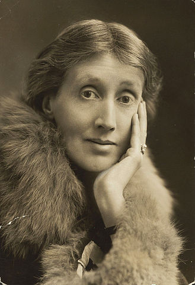
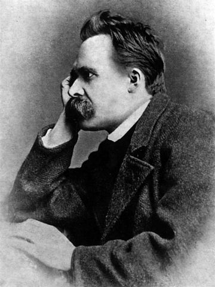
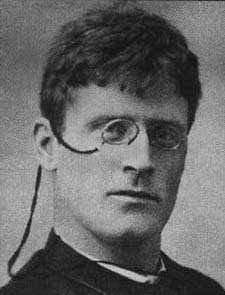

F. M. Dostoievski
Acasă
Viața
Personală
Literară
Opere
Idiotul
Frații Karamazov
Crimă și pedeapsă
Demonii
Ideologie
Critică literară
🡅

Virginia Wolf
Romanele lui Dostoievski sunt vâltori clocotitoare, furtuni de nisip rotitoare, vârtejuri de apă care șuieră și fierb și ne trag înăuntru. În afară de Shakespeare, nu mai e nimic mai fascinant de citit.

Nietzsche
Dostoievski este singurul psiholog de la care am avut ceva de învățat: este una din cele mai fericite întâmplări ale vieții mele, mai mare chiar decât descoperirea lui Stendhal.
Albert Einstein
Dostoievski îmi oferă mai mult de gândit decât orice om de știință, mai mult decât Gauss.

Knut Hamsun
Nimeni nu a analizat structura umană complicată ca Dostoievski. Simțul său psihologic este copleșitor și vizionar.
Părerea ta